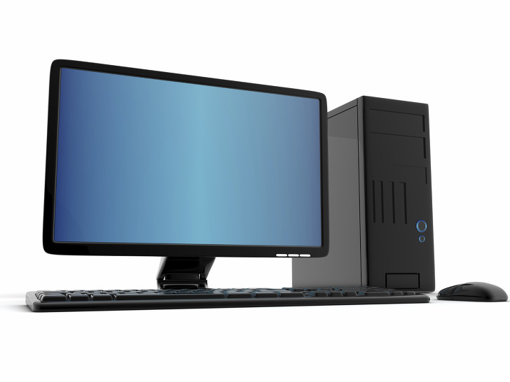

컴퓨터는 이진법을 이용하여 논리 연산, 저장을 수행하는 전자 기계[4]로, 1970년대 이후에는 폰 노이만 구조에 기반을 둔 디지털 컴퓨터로 자주 구현된다.
대형 컴퓨터와 개인용 컴퓨터(데스크톱 컴퓨터, 노트북 컴퓨터, 태블릿 컴퓨터)가 대표적인 컴퓨터이고, 스마트폰[5], 스마트 워치를 비롯한 웨어러블 디바이스, 게임기, 임베디드 시스템, 일부 가전제품 및 기업의 장비[6] 등도 컴퓨터로 볼 수 있다.
초창기 개인용 컴퓨터는 BASIC 등 프로그래밍 언어를 기본적으로 탑재하는 것이 상식이었다. 왜냐하면, 상용 프로그램이라는 개념이 부족했으므로 사용자가 직접 프로그램을 만들어서 컴퓨터를 활용해야 했기 때문이다.
1940년대 현대사의 시작에 딱 맞는 시기에 발명되어 현대의 발명품중에 가장 중요한 물건중 하나가 되었다